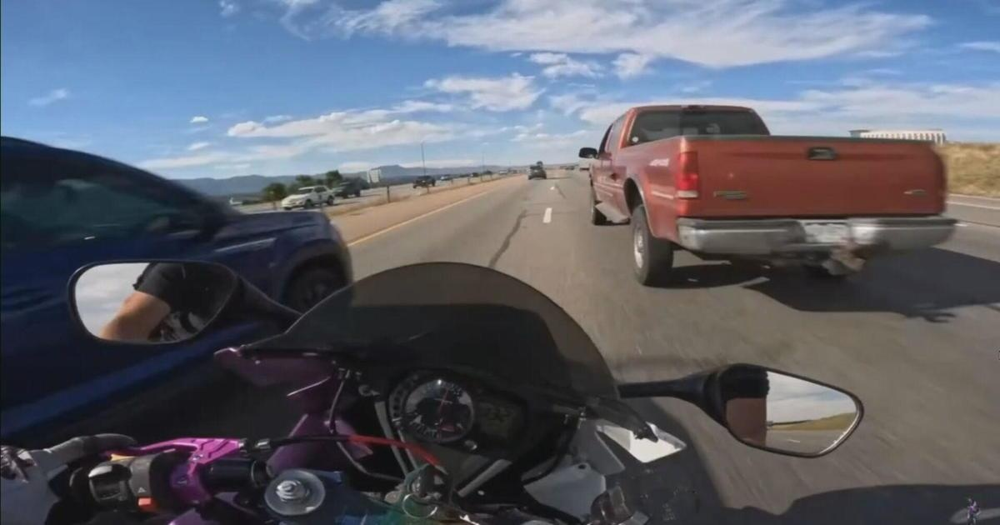

Texas man allegedly gets from Colorado Springs to Denver in 20 minutes and now he has an arrest warrantA viral YouTube video of a Texas man allegedly reaching speeds of 150 MPH on a motorcycle has been taken down, but among its viewers was the Colorado State Patrol, which now wants to award the man criminal charges for his driving. Rendon Dietzmann, 32, of Justin, Texas, goes by Gixxer Brah on YouTube and posts videos from a camera mounted to his helmet while driving his motorcycle. A video titled "From Colorado Springs to Denver in 20 Minutes" appeared to show him traveling at high speeds while weaving in and out of traffic in September 2023. The video has since been taken down, but Colorado State Patrol has now issued an arrest warrant, alleging Dietzmann violated several laws and put "hundreds of people in jeopardy." The drive typically takes about an hour. "Illegal and reckless driving behavior will not be tolerated in Colorado," Colorado State Patrol Sgt. Troy Kessler said in a statement. "We care too much for those traveling on our roadways to ignore the blatant disregard for the safety of others." Being arrested for driving the way Dietzmann allegedly did is the best-case scenario, Kessler said, considering the alternatives can result in death or serious injuries. "If you drive like this, you can expect to be arrested when you are located. This is the best outcome for a person who drives violently since the smallest mistake could result in his death or that of an innocent person in the area. We simply have 'NO TOLERANCE' towards someone who so blatantly disregards the well-being of the community." Justin is a suburb of Dallas and the Colorado State Patrol said it worked with the Dallas Police Department to identify Dietzmann, whose videos appear to show him driving at speeds up to around 180 MPH in some cases. His YouTube channel has around 250,000 subscribers and almost 20 million views across his almost 500 videos. CBS News Colorado attempted to reach Dietzmann via phone numbers listed in public records and through a message to his Instagram account but he did not immediately respond. He's now facing charges of menacing, engaged in speed contest, reckless endangerment, reckless driving, speeding 40 MPH over the speed limit, exhibition of speed and driving without a license plate. for more features. |
 |